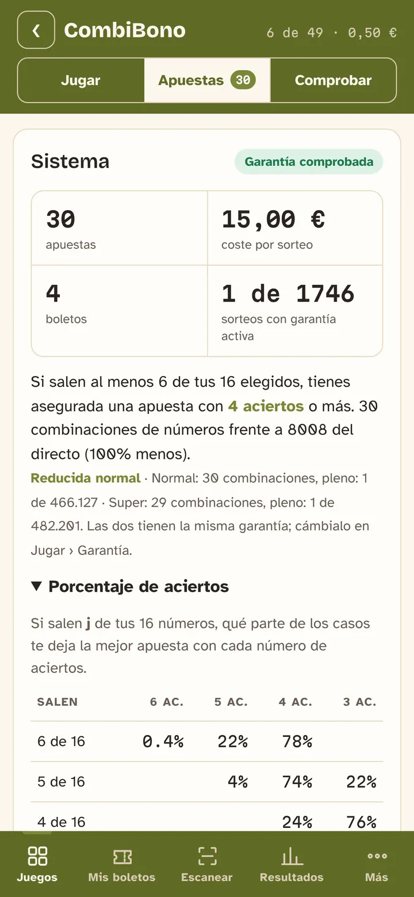

Bonoloto
App independiente. Combinario no es oficial ni tiene relación con Loterías y Apuestas del Estado (SELAE). No vende apuestas: solo te ayuda a prepararlas, y se validan y se pagan en un punto de venta. Solo para mayores de 18 años.
En la app se llama CombiBono. Funciona igual que La Primitiva: 6 números del 1 al 49, con sencillas, múltiple, directo, reducida (con «Sistemas listos») y grupos.
Lo que cambia
- Cada apuesta cuesta 0,50 €; la app hace las cuentas sola.
- No tiene Joker.
- Múltiples de 5 a 11 números, como en el boleto.
- Arriba, la barra te dice si el sorteo cierra hoy y cuánto queda.

Para la garantía, los fijos y los filtros, mira La Primitiva.
Tabla: algunas reducidas de Bonoloto
Las mismas reducidas que en la Primitiva, a 0,50 € la apuesta. Son algunos de los «Sistemas listos» de la app.
| Tus números | Garantía | Apuestas | Coste | Salen los 6 entre los tuyos |
|---|---|---|---|---|
| 9 | 3 aciertos | 1 | 0,50 € | 1 de cada 166.474 |
| 13 | 3 aciertos | 2 | 1,00 € | 1 de cada 8149 |
| 15 | 3 aciertos | 4 | 2,00 € | 1 de cada 2794 |
| 8 | 4 aciertos | 1 | 0,50 € | 1 de cada 499.422 |
| 10 | 4 aciertos | 3 | 1,50 € | 1 de cada 66.590 |
| 12 | 4 aciertos | 6 | 3,00 € | 1 de cada 15.134 |
| 14 | 4 aciertos | 15 | 7,50 € | 1 de cada 4657 |
| 10 (1 fijo) | 4 aciertos | 2 | 1,00 € | 1 de cada 110.983 |
| 12 (2 fijos) | 4 aciertos | 3 | 1,50 € | 1 de cada 66.590 |
| 8 | 5 aciertos | 4 | 2,00 € | 1 de cada 499.422 |
| 9 | 5 aciertos | 7 | 3,50 € | 1 de cada 166.474 |
| 10 | 5 aciertos | 14 | 7,00 € | 1 de cada 66.590 |
Reducida normal, tal como la da la app. Cada fila está comprobada con todas las formas posibles de salir los 6 números: en todas se cumple la garantía. La última columna dice en cuántos sorteos, de media, se da la condición para que la garantía cuente; si no se da, puede haber premio, pero no está asegurado. La app tiene muchas más combinaciones.